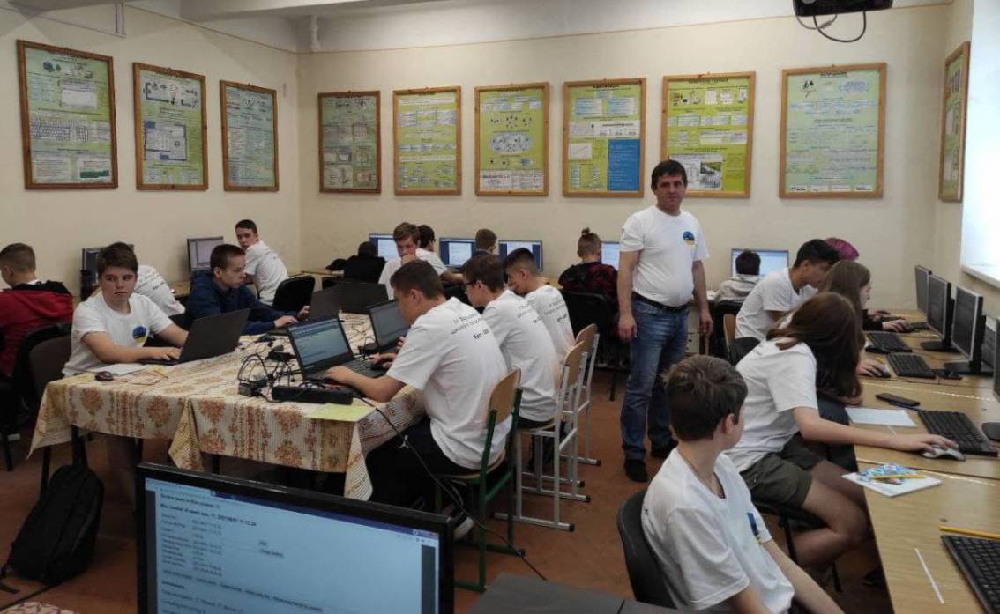
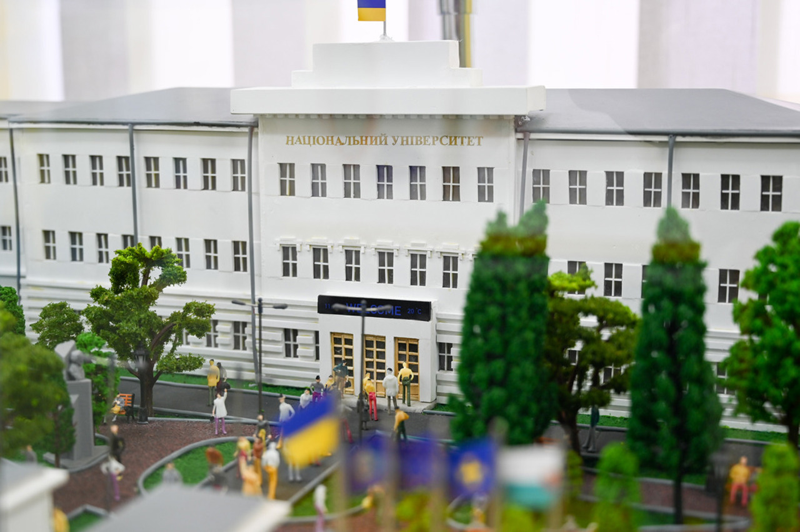
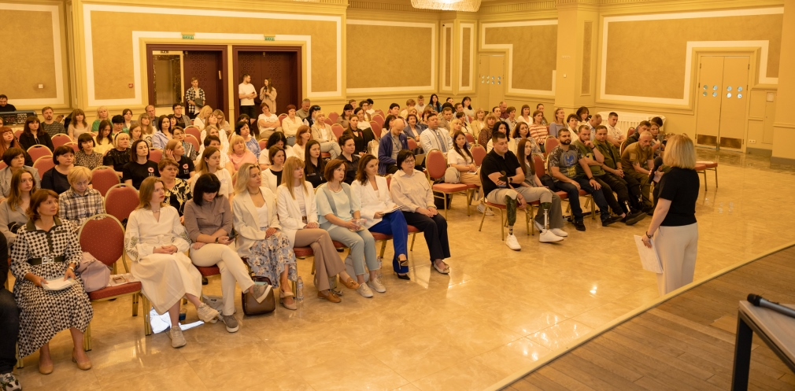

Останні новини

Конференція в КПІ

Форум у Львівській політехніці

Семінар в ОНУ

Ярмарок у Харкові

Літня школа з програмування

Виставка в Полтаві

Олімпіада в Києві

Форум у Дніпрі

Семінар з кібербезпеки